Take a course This document was originally published on help.junolive.com. To take a course, you start it, complete each lesson inside, then finish the course. You can leave in the middle of the course and continue the remaining lessons later, but you can’t change your answers after completing a lesson. This guide walks you through each step in detail. 💡 Before you begin You have to enroll in a course before starting it. Learn how to enroll. 1. Open and start the course Select your profile image in the top-right corner of the navigation bar. Then select My Courses. This opens your personal course dashboard, where you can find all of your courses. 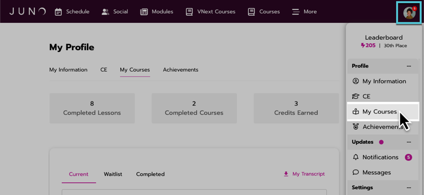 Figure 1. Opening the course dashboard. Select the Current tab to see the courses you are enrolled in. Select a course to open it. 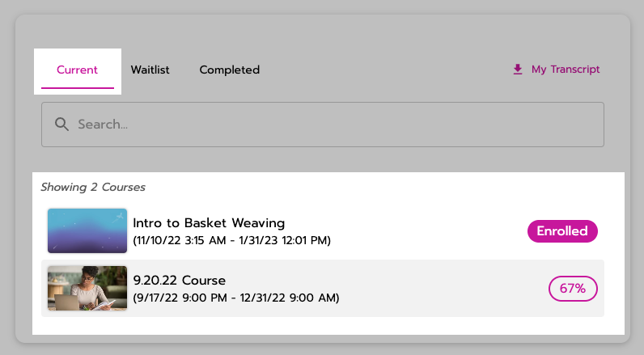 Figure 2. Courses you are enrolled in. On the course home page, select the Start Course button to begin. If the button says something else, you won’t be able to start the course. For example: Course Inactive: You are enrolled but the course hasn’t started yet. Come back later! Or talk to your instructor or teacher to find out when the course begins. On Waitlist: You are on the waitlist, so you won’t be enrolled in the course unless a spot opens up. Learn more about the waitlist. Enroll: You aren’t enrolled in the course. Learn how to enroll. Course Closed: The course started in the past and now it has ended. 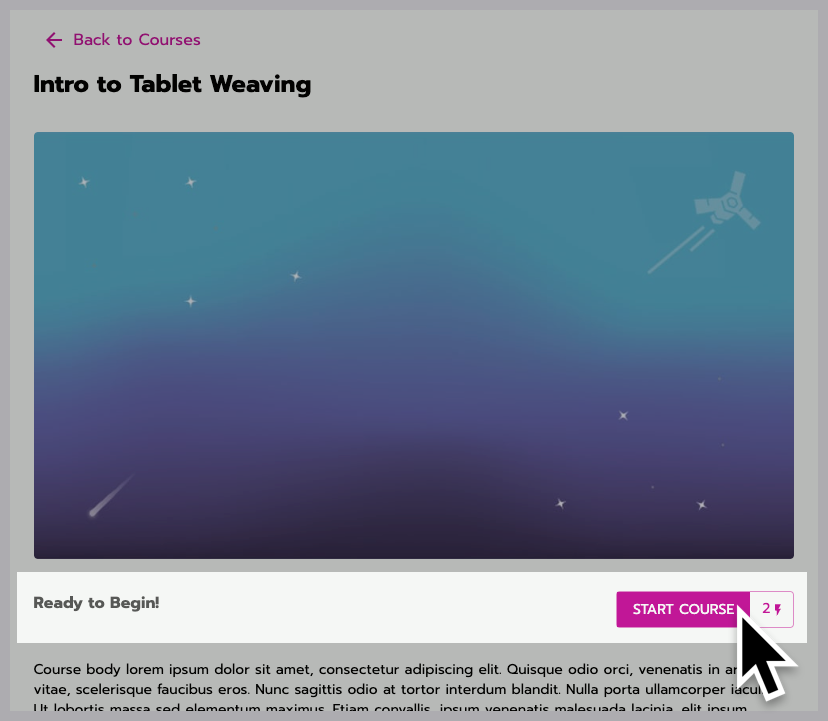 Figure 3. Starting a course. 2. Complete lessons Courses are made up of multiple lessons. Once you start a course, a progress bar at the top of the page shows how many lessons are left. 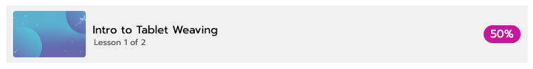 Figure 4. The progress bar. In a lesson, watch or read the content on the page, download resources, and answer any questions. There are multiple types of questions: Question type Example Multiple Choice and Polls: You select answers from a list. If percentage values show up next to the answers after you select one, that’s the percentage of people who chose each answer. This is used on polls so that you can see how popular answers are among your class or community. 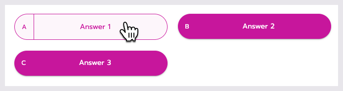 Fill in the Blank: You type your own answer in an empty text box. 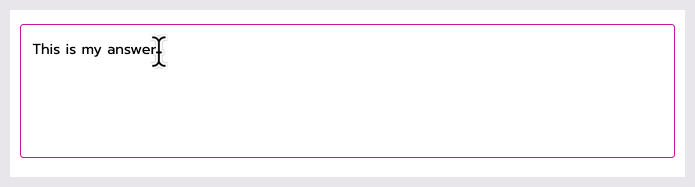 Ranking: You click and drag answers to sort them. 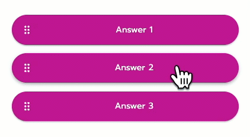 Rating: You pick a number along a scale, like 1-10. 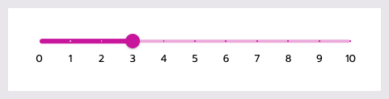 Double-check that you’re happy with your answers. You can’t change them after selecting Next Lesson. If you forgot to answer any questions, you are alerted so that you can finish them before moving on. When you’re done, select the Next Lesson button at the bottom of the page to save and submit your answers. You are automatically sent to the next lesson. 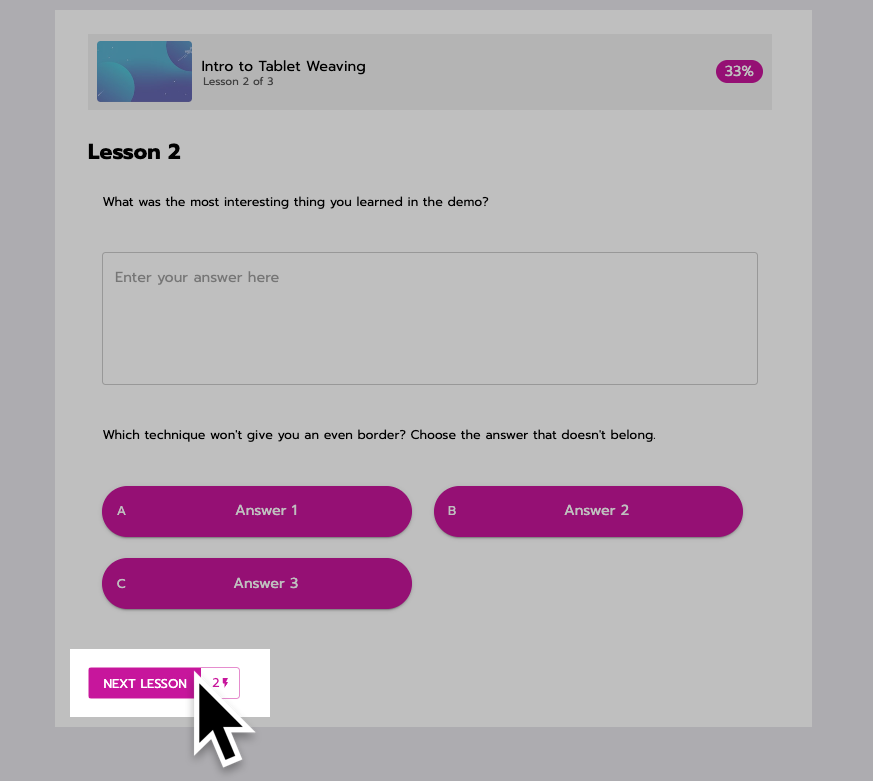 Figure 5. Going to the next lesson. 3. Complete and submit the course On the last lesson, select the Finish button to save and submit the last lesson. 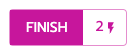 You are redirected to the course home page. There, under the image at the top of the page, select the Complete Course button to submit the course. It’s very important to remember to select Complete Course. You will know it was submitted successfully when the button says Return to Courses or View Certificate. Or if the course is graded, a pop-up appears to let you know if you passed or failed the course. Learn more about grading. 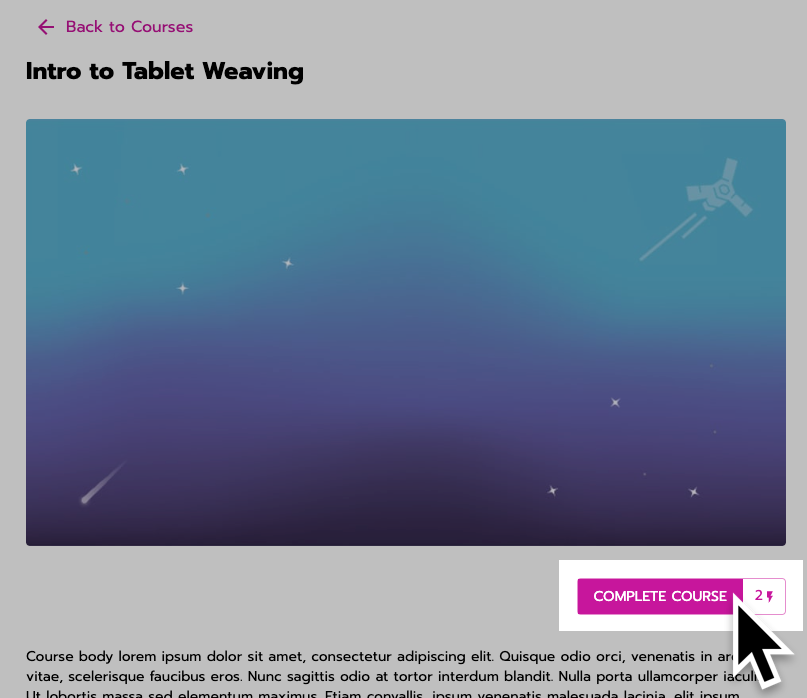 Figure 6. Completing a course. 4. Download your course certificate Depending on how the course was set up, you might be able to download a certificate as additional proof of completion. Select the View Certificate button under the image at the top of the page. Can you change your answers? You can only change your answers while in a lesson. Once you select Next Lesson, your answers are saved and submitted and you can’t change them or retake the course. Poll questions can’t be changed after first answering, even while still in the lesson. Poll questions are usually used for gathering your opinion or feedback, not for graded answers. Can you leave in the middle and come back later? If you leave the page in the middle of a lesson, your answers for that lesson aren’t saved (except for poll questions, as noted above). But answers for previous lessons are saved and submitted. We recommend finishing a lesson, selecting Next Lesson to save and submit it, then leaving. When you come back, you can continue with the next lesson. Open the course and select the Continue Course button to keep going. You cannot change your answers on lessons that were already saved and submitted. 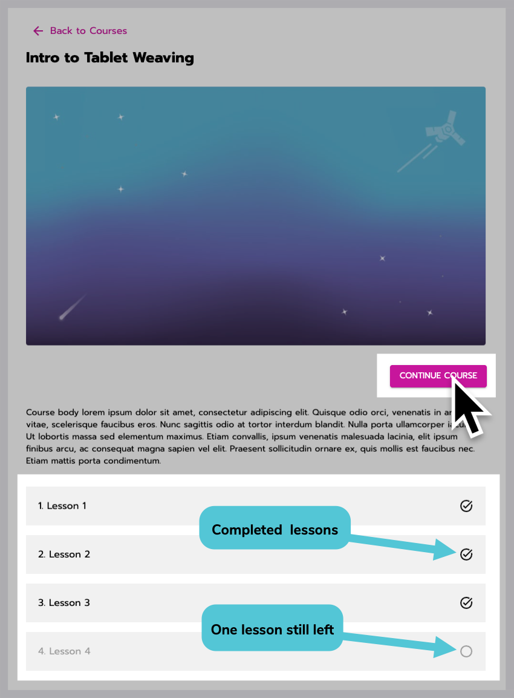 Figure 7. Continuing a course after completing 3 lessons, leaving, then coming back. Can you go back to rewatch videos and reread lessons? Yes, you can go back to lessons to review the content during or after completing the course. You cannot change your answers to questions. When you go back to watch a video, you’re able to fast-forward. (You aren’t allowed to fast-forward when first taking the lesson.) Once the course ends (on the end date set by the course creator), you can no longer go back to lessons.